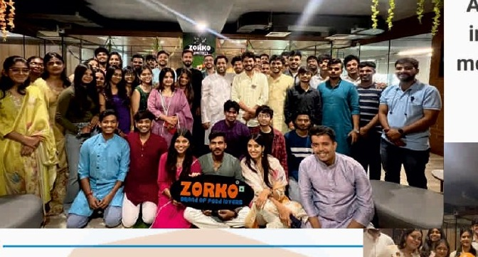

Good people.
Growing together.
The work matters. So do the people doing it. A look at the moments, values, and shared experiences inside Zorko.


A little more human.
A lot more connected.
Passion for the work
A team that brings energy to the everyday and sees meaning in what it is building.
Learning as we go
Training and continuous improvement connect individual development with the work of the business.
Shared celebrations
The magazine captures team gatherings, festivities, recognition, and small moments of connection.
A meaningful direction
An emphasis on ethics, trust, sustainability, and vegetarian food gives the work a shared purpose.
More than
the working day.
The November 2026 magazine describes a range of employee benefits, including refreshments, food discounts, and tenure-based experiences.
Everyday benefits
The magazine lists unlimited refreshments, a food discount, and separate amenities among regular benefits.
Benefits described after one year
Examples include a family dinner, quarterly movie tickets, waterpark passes, and paid menstrual leave.
Benefits described after two years
Examples include travel experiences, gym membership, and entertainment subscriptions.
Published benefits are shared as a reference. Eligibility, availability, and current terms should be confirmed with the Zorko team during recruitment.